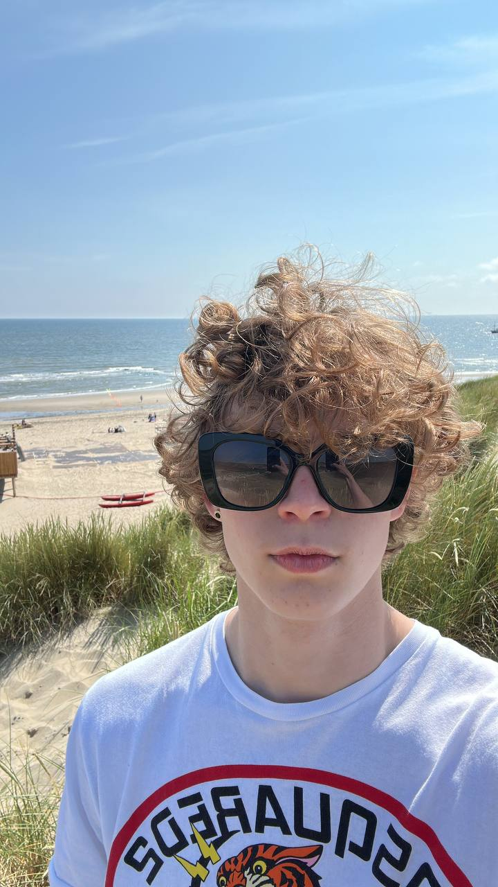
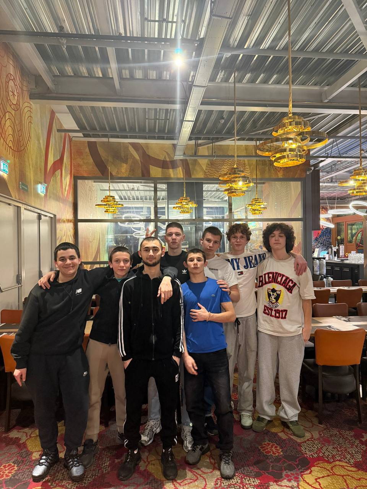
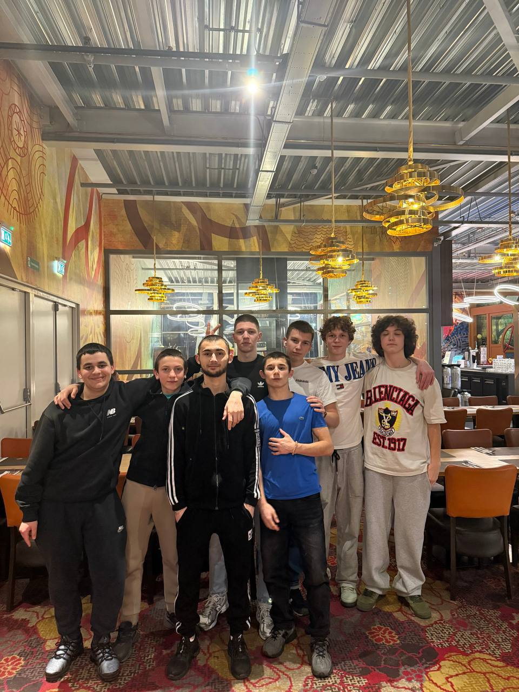

Ik ben Maxim Tarasov,
Ik ben 17 jaar, Ik ben geboren in Oekraine maar nu woon Ik in Amsterdam,
ik kom van International school, Ik volg opleiding Software Developer. 
Ik woon in Amsterdam, Ijburg.  In mijn vrije tijd spel ik vaak gitaar, ook computer games en buiten gaan 
Mijn top 10 dingen die ik graag doen:
1. Met vrienden rondhangen
2. Dota 2 spelen
3. Muziek luisteren
4. Films en series kijken
5. Lekker lang uitslapen als het kan
6. Tijd doorbrengen in de buitenlucht
7. gitaar spelen
8. Basketball spelen
9. Grappige verhalen of memes met vrienden delen
10. Programmeren en nieuwe dingen leren maken
In mijn vrije tijd spel ik vaak gitaar, ook computer games en buiten gaan 
Mijn top 10 dingen die ik graag doen:
1. Met vrienden rondhangen
2. Dota 2 spelen
3. Muziek luisteren
4. Films en series kijken
5. Lekker lang uitslapen als het kan
6. Tijd doorbrengen in de buitenlucht
7. gitaar spelen
8. Basketball spelen
9. Grappige verhalen of memes met vrienden delen
10. Programmeren en nieuwe dingen leren maken